Task 3 paths: actual vs model
idx 103: 19->21 model 54 steps, hits 45, reached 0
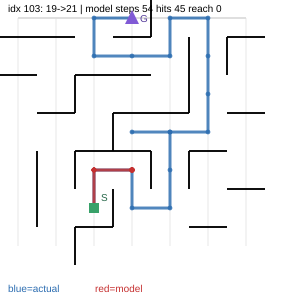
idx 127: 36->2 model 51 steps, hits 3, reached 0
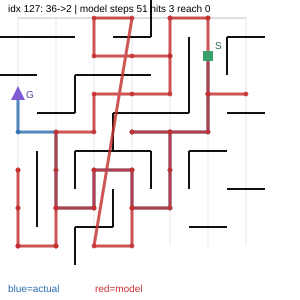
idx 131: 16->45 model 50 steps, hits 48, reached 0
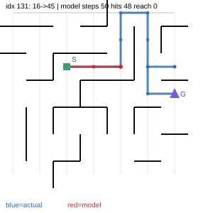
idx 107: 2->40 model 50 steps, hits 5, reached 0
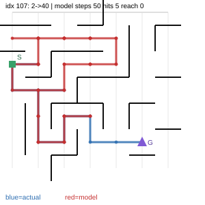
idx 123: 42->45 model 43 steps, hits 4, reached 1
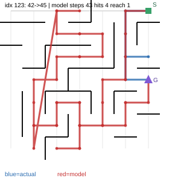
idx 119: 36->17 model 24 steps, hits 5, reached 1
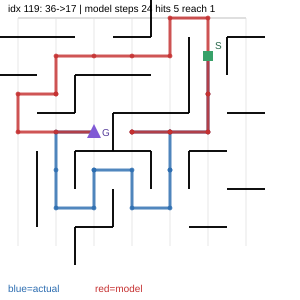
idx 135: 23->7 model 14 steps, hits 2, reached 1
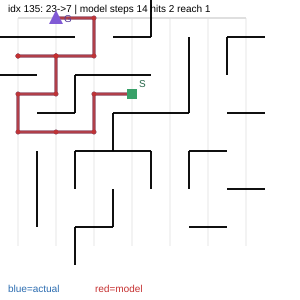
idx 139: 8->17 model 11 steps, hits 2, reached 1
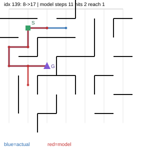
idx 143: 43->7 model 11 steps, hits 1, reached 1
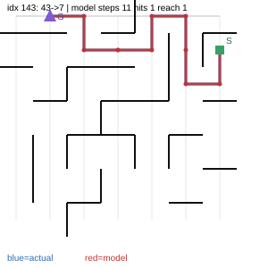
idx 147: 48->46 model 9 steps, hits 5, reached 1
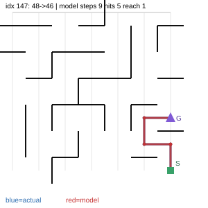
idx 115: 43->18 model 9 steps, hits 0, reached 1
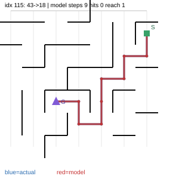
idx 111: 47->45 model 4 steps, hits 0, reached 1
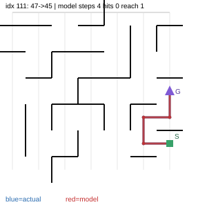